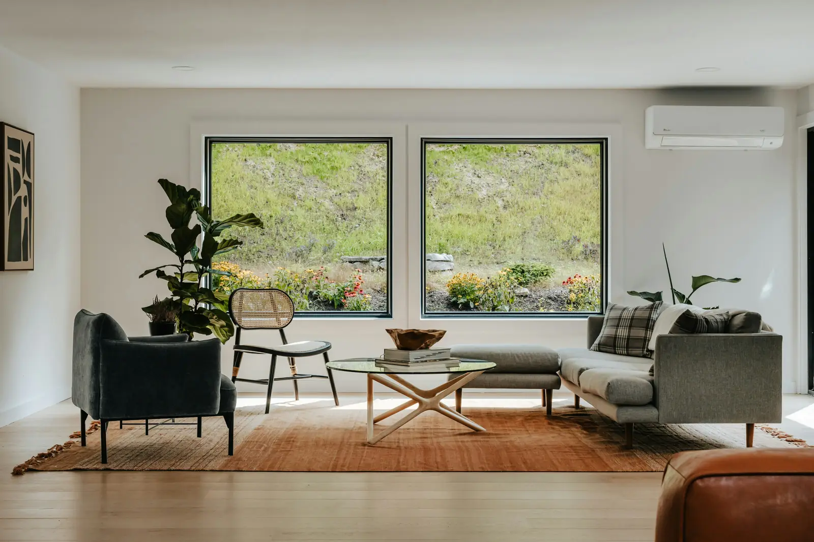
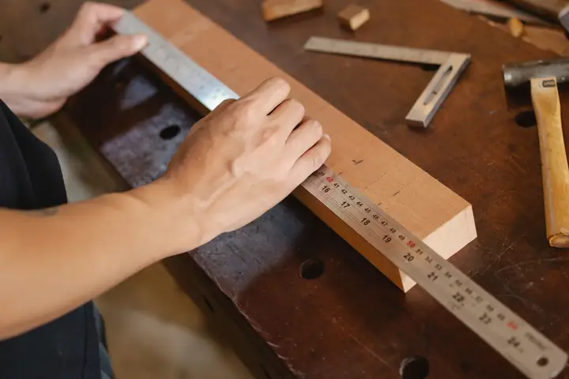
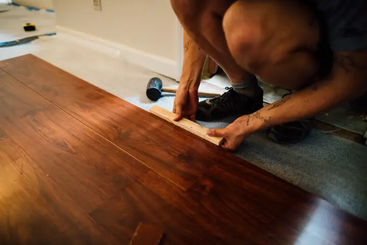
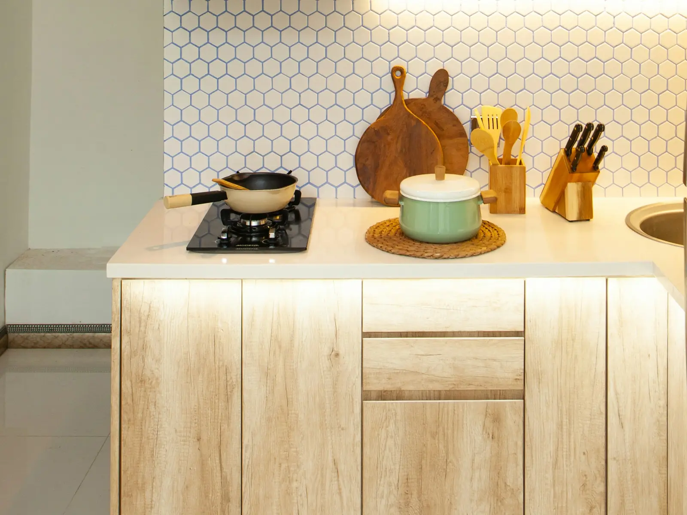
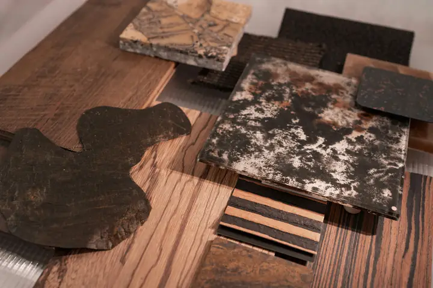
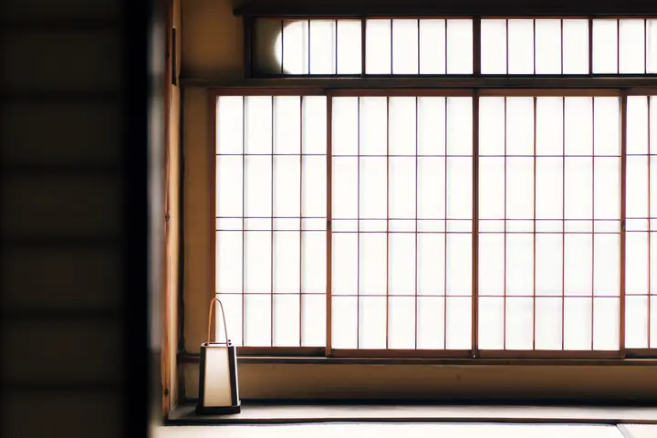
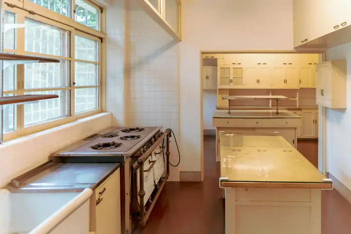

工事前
台所
4.5畳居間
8畳
4.5畳居間
8畳
工事後
LDK 14畳
間取りの変更・内装
台所と居間をつなげたLDKリフォーム
- 建物
- 木造2階建て・築31年
- 工期
- 約6週間（住みながら）
- 費用
- 620万円（税込）
- 地域
- 千草ヶ丘市
「台所が北側で暗く、居間との間の壁で家族の様子が見えない」というご相談でした。耐震上必要な柱は残して壁を撤去し、床下と壁に断熱材を入れています。
お見積りは無料フォームは24時間受付・3営業日以内にご連絡
見積りを相談する
千草ヶ丘市・橘ヶ浜町・白梅野市の工務店です
自社の大工と職人で施工する、地域の工務店です。現地調査から引き渡しまで、同じ担当者が窓口になります。



掲載写真は素材写真です
工事前
工事後
間取りの変更・内装
「台所が北側で暗く、居間との間の壁で家族の様子が見えない」というご相談でした。耐震上必要な柱は残して壁を撤去し、床下と壁に断熱材を入れています。

キッチン
扉を明るい木目に、壁を掃除しやすい白いタイルに替えました。カウンターの下に照明を入れ、夜も手元が暗くなりません。工事中の4日間は、仮設の流しを用意しています。

見本用の架空の設定です
| 工事 | 工期の目安 | 費用の目安（税込） | 含まれるもの |
|---|---|---|---|
| トイレの交換 | 1日 | 18万〜35万円 | 便器・床と壁紙の張り替え・処分費 |
| キッチンの交換 | 3〜5日 | 80万〜180万円 | 本体・給排水と電気の工事・壁の補修 |
| ユニットバスの交換 | 4〜6日 | 90万〜190万円 | 本体・解体・給湯の接続・入口の補修 |
| 洋室6畳の床と壁紙 | 2〜3日 | 15万〜38万円 | 家具の移動・下地の調整 |
| 手すりの取り付け | 半日 | 2万〜6万円 | 1か所あたり・下地の補強 |
※ 金額は製品の等級と建物の状態で変わります。正式な金額は、現地調査のあとに項目ごとの見積書でお伝えします。
紹介料はいただいていません。ご紹介先と直接ご契約いただく形です。

下請けに丸ごと任せることはしません。電気と設備は、20年以上一緒に仕事をしている地元の業者が担当します。
「工事一式」とまとめず、材料・手間・処分費を分けて書きます。比べやすく、削る相談もしやすくなります。
お仕事で日中ご不在の方にも、その日の作業内容と写真をお送りします。
お問い合わせから工事の開始まで、早ければ3週間ほどです。
フォームからご連絡ください。困っていることを一言書いていただくだけで構いません。
担当者が伺い、寸法と配管・下地の状態を確かめます。所要時間は約1時間です。
1週間ほどで、項目ごとの見積書と図面をお持ちします。
見積りの内容にご納得いただいてから、ご契約いただきます。契約を急がせるような営業はしません。
着工前に、ご近所へのあいさつに伺います。
一緒に仕上がりを確かめます。1年目に無料で点検します。
納品後に実際の声を載せる枠（見本では作り話を載せません）
実際の案件では、ここに感想を2〜3件、お名前は頭文字だけで入れます。施工事例も同じで、上の2件は見本のための架空の事例です。実際の制作では、実際に施工した現場の写真に差し替えます。
大工だった先代が始めた、従業員9名の工務店です。創業から27年、地域の家の修理と増改築を続けてきました。現場が会社から車で40分以内に収まる範囲だけでお受けしているのは、何かあったときにすぐ駆けつけられるようにするためです。

はい。現地調査とお見積りは無料です。お断りいただいても費用はかかりません。
ほとんどの工事は住みながらできます。水まわりが使えない日は、事前に日数をお知らせし、必要に応じて仮設のトイレや流しを用意します。
手すりや段差の解消は、介護保険の住宅改修の対象になることがあります。申請に必要な書類の作成もお手伝いします。
大丈夫です。ほかの会社の見積書と比べやすいように、項目ごとに分けてお出しします。
できます。管理組合への届け出が必要なことが多いので、規約を確かめたうえで、届け出の書類づくりもお手伝いします。
工事の金額が100万円未満の場合は、お引き渡しのあとに一括でお支払いいただきます。100万円以上の場合は、契約時と完了時の2回に分けています。
すみません、お受けしていません。工事のあとの点検や、何かあったときにすぐ伺える範囲に絞っています。
3営業日以内に、担当者からご連絡します。写真があれば、フォームのあとにお送りいただくとお話が早く進みます。
お電話でのご説明をご希望の方へフォームの「困っていること・ご希望」に「電話希望」と、つながりやすい時間帯をお書きください。担当者からおかけします（8:30〜18:00・日曜定休）。
この見本のフォームは送信されません。